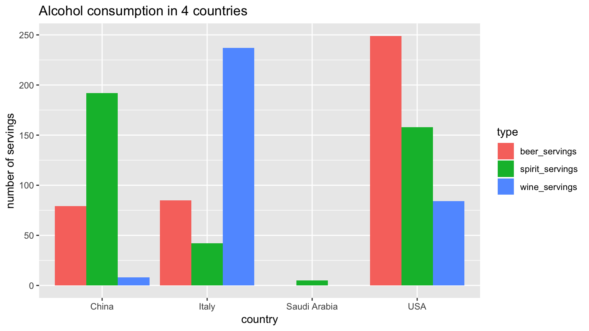

SDS 192: Introduction to Data Science
Albert Y. Kim
Last updated on 2018-09-21
Schedule
- Topics:
- Tools of the trade (orange): R, RStudio, R packages, R Markdown, Git & GitHub.
- Data visualization (pink): Grammar of Graphics, Five Named Graphs (5NG), color theory.
- Working with data (blue): Tidy data, data wrangling, data importing.
- Maps and spatial data (green): Map and geospatial data.
- Learning how to learn new data science tools (yellow): Text data, webscraping, SQL.
- Readings + Reference: MD is ModernDive, MDSR is Modern Data Science with R, TMR is Text Mining with R.
Lec 7
Announcements
- Go over questions in
#randomSlack channel - ModernDive Learning Check solutions are
directly under question statementnow all in Appendix D at the back of the book. - Lecture on Monday will end at 11:55am to give people time to comfortably get to Emily Dodwell’s talk listed in Lec06.
- Mini-project 1: Look at “Projects” tab
- Videoconferencing: In Slack, in a Direct Message, type
/appear SOME_UNIQUE_NAME_ONLY_YOU_WOULD_THINK_OF
Today’s Topics/Activities
1. Discussion on Histogram Binning
Comparing Figures 3.10 and 3.11 in the ModernDive readings on histograms:
library(ggplot2)
library(nycflights13)
# Code to generate Fig 3.10 with bar border color white
ggplot(data = weather, mapping = aes(x = temp)) +
geom_histogram(color = "white")
# Code to generate Fig 3.11
ggplot(data = weather, mapping = aes(x = temp)) +
geom_histogram(bins = 60, color = "white")
Why the weird up and down spikes in the right-hand histogram? Here is a random sample of 99 temperatures of the 464 temperature recordings between 50 and 51 degrees
## [1] 50.00 50.00 50.00 50.00 50.00 50.00 50.00 50.00 50.00 50.00 50.54
## [12] 50.00 50.00 50.00 50.00 50.90 50.00 50.00 50.00 50.00 50.00 50.00
## [23] 50.00 50.00 50.00 50.00 50.00 50.00 50.00 50.00 50.00 50.72 50.00
## [34] 50.00 50.00 50.00 50.00 50.00 50.00 50.00 50.00 50.00 50.00 50.00
## [45] 50.00 50.00 50.00 50.00 50.00 50.00 50.00 50.00 50.00 50.00 50.00
## [56] 50.00 50.00 50.00 50.00 50.00 50.00 50.00 50.00 50.00 50.00 50.00
## [67] 50.00 50.90 50.00 50.00 50.00 50.00 50.00 50.00 50.00 50.00 50.00
## [78] 50.00 50.00 50.00 50.00 50.00 50.00 50.00 50.00 50.00 50.00 50.00
## [89] 50.00 50.00 50.00 50.00 50.00 50.00 50.00 50.00 50.00 50.00 50.00Here is a random sample of 99 temperatures of the 763 temperature recordings between 55 and 56 degrees:
## [1] 55.94 55.04 55.94 55.94 55.04 55.04 55.40 55.94 55.94 55.04 55.94
## [12] 55.04 55.94 55.04 55.94 55.94 55.94 55.94 55.94 55.04 55.04 55.58
## [23] 55.94 55.94 55.94 55.94 55.94 55.94 55.94 55.94 55.04 55.04 55.94
## [34] 55.04 55.40 55.04 55.94 55.94 55.94 55.40 55.04 55.40 55.04 55.94
## [45] 55.04 55.40 55.94 55.94 55.04 55.94 55.94 55.94 55.94 55.94 55.04
## [56] 55.94 55.40 55.04 55.94 55.94 55.94 55.94 55.94 55.04 55.04 55.04
## [67] 55.04 55.94 55.94 55.94 55.04 55.94 55.94 55.94 55.94 55.94 55.94
## [78] 55.94 55.04 55.94 55.94 55.94 55.04 55.94 55.94 55.04 55.94 55.94
## [89] 55.04 55.94 55.94 55.04 55.40 55.04 55.94 55.04 55.94 55.94 55.04What is the pattern?
2. Chalk Talk
Facets and Facetted Histograms. Say you’re asking yourself “What kind of jacket (if any) should I bring to my trip to New York?” Which plot is more useful? Fig 3.13 from ModernDive of all 26115 temperature recordings at all three airports in New York City
to Fig 3.14 of the temperature recordings split by month.

3. In-class exercise
Read ModernDive 3.6 on Facets
4. Tweet of the day
ModernDive co-author Chester Ismay @old_man_chester is Senior Curriculum Lead at DataCamp. If you are curious for a “big picture” view of why we are using DataCamp, read the linked blogpost, in particular look at the image of the “data science pipeline”. Remember, you have free access to all DataCamp courses for 6 months!
Read this blog post by @old_man_chester to learn about our new Tidyverse Fundamentals with R Skill Track! In this track, you’ll learn the skills needed to get you up and running with data science in R using the #tidyverse. https://t.co/4fqAdJgoTX pic.twitter.com/RsYxe4Hpm5
— DataCamp (@DataCamp) September 20, 2018
Lec 6
Announcements
- Curious about a career in data science? Then come for Emily Dodwell (class of 2011)‚Äôs talk ‚ÄúThe Nuts and Bolts of a Data Science Career‚Äù on Monday 9/24; stay for the üçïlunch! Click here for details.
- Added hints to Problem set 2 R component below.
- In above schedule and in syllabus project due dates are posted. Details on mini-project 1 on data visualization will be given this Friday.
- RStudio Server update: Computing and Technical Services has added 4 additional processors to RStudio Server so things should run smoother!
- Learning check solutions by Friday, promise!
- Slack poll on
scratchpad.R
Today’s Topics/Activities
1. Chalk Talk
Histograms visualize the distribution of a numerical variable.
2. In-class exercise
- Read the following requests from Suzanne Palmer in Computing and Technical Services about using RStudio Server
- “Please do not have students install packages.” Recall: If you are using RStudio Server, there is no need to install packages, only to load/open them using the
library()command. For examplelibrary(nycflights13). - “Please ask students to limit their number of concurrent sessions.” In other words, when you are done working in RStudio Server, please close your browser window so that it frees up shared computing resources for other people.
- If you would like to do your own work that involves “big data”, for example for a thesis project, please Slack me and we’ll set up a separate account.
- “Please do not have students install packages.” Recall: If you are using RStudio Server, there is no need to install packages, only to load/open them using the
- Read former Smith College professor Dr. Amelia McNamara’s visual essay on histograms.
- Then, as marked in the Schedule at the top of this page, read ModernDive 3.5
3. Tweet of the day
On imposter syndrome is a psychological pattern in which an individual doubts their accomplishments and has a persistent internalized fear of being exposed as a “fraud”. Click below to read full thread.
Let's talk about imposter syndrome in tech ‚Äì specifically, ways we can combat it better, both individually and as a community (a thread) üëá
‚Äî Caitlin Hudonüë©üèº üíª (@beeonaposy) September 18, 2018
Lec 5
Announcements
- What my
scratchpad.Rlooks like after Lec4. Yours shouldn’t be exactly the same, but close.
Note because I saved my work,scratchpad.Ris written in black. If I had unsaved work, this would be written in red.

- Problem set 02 posted below.
Today’s Topics/Activities
1. Chalk Talk
- What is overplotting?
- When do I use linegraphs instead of scatterplots?
2. In-class exercise: Comment lines
In the screen shot of my scratchpad.R above, any line that starts with a # are called comment lines. They are ignored by R when you run them in the console. Run both these lines in the console separately:
this is a comment line that R ignores that helps readers (including you!) understand code
# this is a comment line that R ignores that helps readers (including you!) understand codeWhy does one line return an Error whereas the other doesn’t?
3. In-class exercise
As marked in the Schedule at the top of this page, read ModernDive 3.3.2 - 3.4 (start of Chapter 3.3.2 to the end of 3.4).
Problem set 2
Assigned Monday 9/17, due Monday 9/24 at 9pm Eastern Time
1. DataCamp
- Complete only the following two chapters from the “Introduction to the Tidyverse” course, which you should see in the following link:
- Chapter 1: “Data wrangling”.
- Chapter 2: “Data visualization”
- Skip Chapters 3-4 on “Grouping and summarizing” and “Types of visualizations” for now.
- Note: DataCamp does things in a slightly order, data wrangling first then data visualization. ModernDive however does data visualization first in Chapter 3 then data wrangling in Chapter 5. Reading ModernDive Chapter 5 is not a pre-requisite for completing this problem set.
- See the syllabus for expectations on DataCamp assignments.
- If you have already completed the “Introduction to the Tidyverse” DataCamp course previously using a DataCamp account based on your Smith email, you do not need to re-do them; they will show up in my logs as completed.
2. R component
Read the following 538 article Higher Rates Of Hate Crimes Are Tied To Income Inequality. You’ll be analyzing the same data used to write this article. The data is in the hate_crimes dataframe, which is included in the fivethirtyeight R package. A larger goal of this problem set is to start practicing the “data analysis” workflow.
- Download the following R scratchpad:
PS02_lastname_firstname.Rand rename it so that it matches your name. For example in my case:PS02_Kim_Albert.R. - RStudio Server users: “Upload” this file to RStudio Server by going to RStudio -> Files panel -> Upload. (see image below)
- Open
PS02_lastname_firstname.Rand follow the indicated steps. I highly recommend you copy and paste existing code from ModernDive and then tweak it to achieve your goal. - When you are finished, check that your code is reproducible and replicable. Meaning if you were to send someone else this file and they ran the code, woult they get the same results as you?
- Save your work and close
PS02_lastname_firstname.R. - Restart R: RStudio menu bar -> Session -> Restart R. This “reboots R” by deleting all previously saved data frames and shuts down all loaded packages.
- Go to the Files panel of RStudio and re-open
PS02_lastname_firstname.R. - Run all your code as described in Lec4 and make sure that you can replicate the scatterplot.
- Save your work and close
- Submission:
- RStudio Server users: “Download” this file on to your compter by going to RStudio -> Files panel -> More -> Export. (see image below)
- Submit this on Moodle.
- See syllabus for expectations on R component submissions.
alt text
Hints:
- Everything you need to know for this problem set are based on Lectures 1-4, in particular the ModernDive readings.
- While I encourage you collaborate/help each other out, please make an honest effort to do this problem set. Part of the graders’ and my goal in grading the problem sets is to identify both your strengths and weaknesses in preparation for the projects. Don’t forget the lowest two problem set scores are dropped!
Lec 4
Announcements
- Extra office hours today 3:30-5pm in McConnell 215
- For those of you with interests in Biology: Reed College’s Prof Derek Applewhite “The Spatial and Temporal Regulation of Non-muscle Myosin II Contractility” talk on Monday afternoon.
- Added note about when to do DataCamp courses to syllabus: You do not need to complete any DataCamp courses in preparation for future lectures; they will always be explicitly assigned.
- Solutions to previous lecture’s learning checks will be posted directly underneith question. Ex: Look at LC2.1 Solutions I just posted.
Today’s Topics/Activities
1. Chalk Talk
The Grammar of Graphics: the theoretical underpinnings of statistical graphics
2. In-class exercise: R code scratchpads
Question: Should I be copying/pasting/tweeking code directly in the console window?
Answer: You can, but it makes saving work difficult. Instead, create a “scratchpad”:
- Create a new
.Rscript: In RStudio Menu Bar -> File -> New File -> R Script. - Save this as
scratchpad.R - Copy/paste/tweak any code in your scratchpad, not in console window. For example, for this exercise write:
1+1 - To “run” code in the console (in other words tell R to “do this”), you can do one of the following:
- Copy it from scratchpad, then paste it in console, then hit enter.
- Highlight the code you want to run, then click on “Run”
- Highlight the code you want to run, then press control+enter on Windows/Unix/Chromebook or ⌘+enter on macOS.
3. In-class exercise
As marked in the Schedule at the top of this page, read ModernDive 3 - 3.3.1 (start of Chapter 3 to the end of 3.3.1).
- Do not ignore the “Needed Packages” section at the beginning. Recall:
- The phone vs app analogy described in ModernDive 2.3.
- If you are using RStudio Server in your browser, these packages come pre-installed.
- If you are using RStudio Desktop installed on your computer, you’ll have to ensure these packages are installed.
- Please skip the “Introduction to the Tidyverse” DataCamp course mentioned at the beginning of Chapter 3 for now.
- “Learning checks”: These are practice problems that you do not need to submit. Should you write your answers down? If you feel like you would benefit, then yes! I will post solutions to the learning checks before the next lecture!
Lec 3
- Go over previous Slack
#general_announcements - If you haven’t already, please complete the Intro Survey from Lec 1.
- Syllabus discussion:
- Added full topic schedule
- Added office hours
- Added expectations to following sections: Basic Course Information, Topic Schedule and Readings, Evaluation, Accommodations, Code of Conduct
Today’s Topics/Activities
- Go over ModernDive Chapter 2. Note:
- You can skip all videos and linked DataCamp courses.
- “Learning checks”: These are practice problems that you do not need to submit. Should you write your answers down? If you feel like you would benefit, then yes! I will post solutions to the learning checks before the next lecture!
- Start Problem set 1 below. I will discuss the DataCamp interface at 11:55am.
Getting help
A big part of learning data science tools is learning how to get help effectively. For example, in this course:
In class:
- Ask yourself “Is this something I can Google?” Learning to use Google effectively is an important tool in a data scientist’s toolbox.
- Ask the people sitting next to you.
- Raise your hand to ask the data assistant or myself.
Outside of class:
- Ask yourself “Is this something I can Google?” Learning to use Google effectively is an important tool in a data scientist’s toolbox.
- Ask yourself “Are there people I work with in class that I can Slack?”
- If you all don’t know, post a question on Slack in the
#r_questionschannel. - Visit the Spinelli Center for tutoring Sunday-Thursday 7-9pm (see syllabus for more info).
Problem set 1
Assigned Wednesday 9/12, due Monday 9/17 at 9pm Eastern Time
- DataCamp
- Complete the following chapters from the “Introduction to R” course, which you should see in the following link:
- Chapter 1: “Intro to basics”
- Chapter 2: “Vectors”
- Chapter 4: “Factors”
- Chapter 5: “Data Frames”
- See the syllabus for expectations on DataCamp assignments.
- If you have already completed the “Intro to R” DataCamp course previously using a DataCamp account based on your Smith email, you do not need to re-do them; they will show up in my logs as completed.
- Complete the following chapters from the “Introduction to R” course, which you should see in the following link:
- Administrative stuff: To receive full credit for this portion simply ensure
- On Slack:
- Your full name is listed: full name = how you would like to be addressed in class & last name.
- You have added a profile picture with your face visible. This will help me learn your names.
- Hint: Start relying on Google! “How do I change my name and profile picture on Slack?”
- You are a member of the
#moderndive_typoes,#r_questions, andrandomchannels.
- Your full name is listed: full name = how you would like to be addressed in class & last name.
- On DataCamp: Your full name is listed in your profile; the rest is optional.
- On Slack:
Lec 2
- Background Based on n=61 responses so far:
- Slack
- Click the hashtag in the menu bar to open the SDS 192 Slack team (feel free to use the Slack App if you have it installed). If you have an account yet, click here to join.
- Practice sending formated messages to a classmate.
- Getting started with data in R
- Click “R” in the menu bar above to open RStudio Server to use R in your web-browser.
- Click on ModernDive above and read Chapter 2: Getting started with data.
- You don’t need to watch the videos for now
- If you are using RStudio Server, you don’t need to install packages. However, you will need to load them.
- Learning checks: These are practice problems to reinforce your learning. You do not need to submit today’s learning checks.
- DataCamp discussion.
Lec 1
- Data viz
- Comparison of Beck’s original (1933) and today’s London Underground map.
- Map of actual routes London Underground lines follow.
- Data wrangling Do the following…
- Login to RStudio Server. If you can’t, follow along with someone nearby and fill out the help Google Form below.
- In the “Console” window copy and paste
library(nycflights13)and hit enter. Then copy and pasteView(flights)and hit enter.
- Maps and spatial data
- ColorBrewer 2.0: Color Advice for Maps.
- Interactive maps via the leaflet JavaScript library, which we’ll interface with using the
leafletR package.
- Text data
- Who wrote the New York Times anonymous opinion editorial “I Am Part of the Resistance Inside the Trump Administration”? A text analysis approach to answering this question.
TODO’s
- Make sure:
- You can login to RStudio Server (click R icon in menubar above).
- You have created a GitHub account using your Smith email. While I highly encourage you to add a publicly-facing picture and your full name to your profile, this is not required.
- You are part of the class Slack team (click hashtag icon in menubar above) and
- Have added a profile picture
- Can see the
#192_data_science#moderndive_typoes, andrandomchannels - Have turned on email notifications
- You have received an invitation email to DataCamp and are a member of the group. Do not create an account separately on datacamp.com, but rather use the link in the email you received.
- You’ve completed the Intro Survey
- Need help with any of the above?
Fill out this Google FormSlack me!